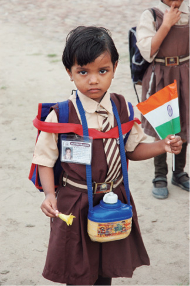
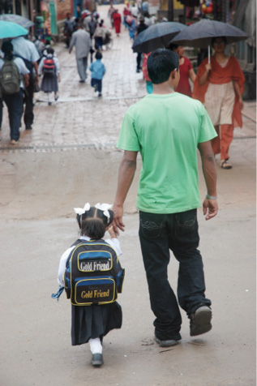

NEPAL, 24 Ağustos

Hindistan
Ülkesinin 60. kuruluş yılını kutlayan 6 yaşında bir öğrenci.
Nepal sokaklarında çocukların sırtlarında çantalar görüyoruz, burada okullar hâla açık olmalı. Onları her gördüğümüzde, “okula gitmek için daha çok küçükler” diyoruz kendi kendimize. Okula gidiyor olamazlar gibi geliyor. Fakat mavi önlükleri bir örnek.
İnci, Nepal eğitim sistemini inceleme fırsatını kaçırmıyor. “Müfettiş mi oldun?” diye dalga geçiyorum. Çantalarını açıp içlerindeki yazı defterlerini ve kitapları inceliyor. Ayaküstü ödev kontrolü bile yapıyor. Çantalarını kapatıp, hepsine “Aferin!” dedikten sonra birer şeker veriyor. Koşa koşa uzaklaşıyorlar yanımızdan.
Zaten genelde ufak tefek olan Nepalliler’in yaşını, çocukken tahmin etmek daha da zor. Bazılarına neredeyse bebek diyeceğim kadar küçükler. Buradaki eğitim herhalde Hindistan’dan ve aslında İngiltere’den etkilenmiş olmalı ki bu kadar küçük yaşta okula başlıyor çocuklar.
Bu çocuklara arkadan bakıldığında, vücutları görünmüyor, sanki koca bir okul çantasının başı ve ayakları varmış gibi görünüyor. Sanki “Yürüyen çantalar” okula gidiyorlar.

Nepal Katmandu
“Good friend gold friend.”